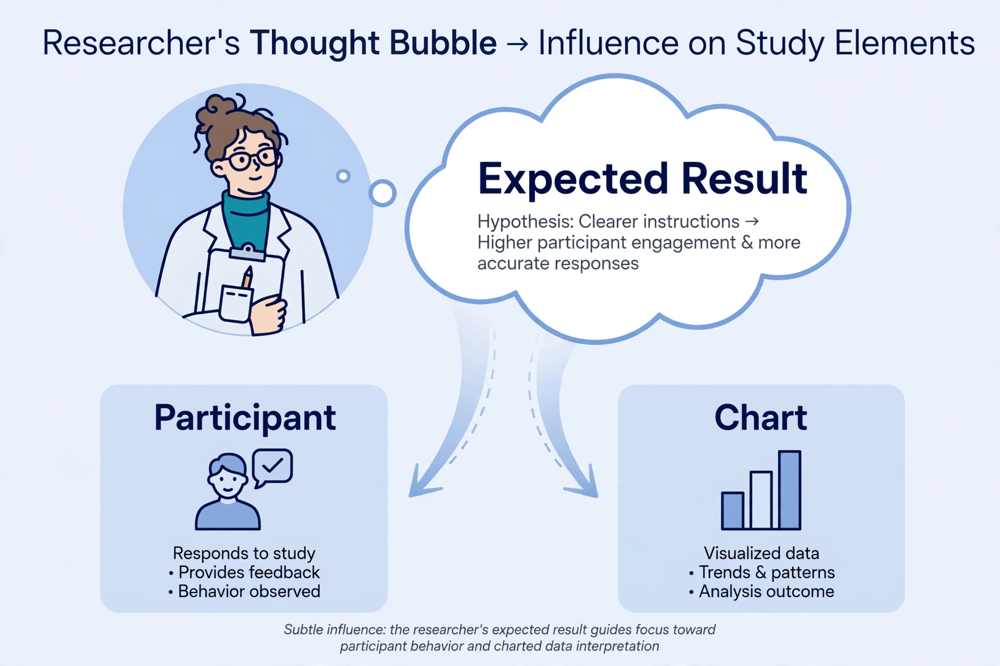

The observer-expectancy effect (or experimenter-expectancy effect) is a form of reactivity in which a researcher's cognitive bias causes them to subconsciously influence the participants of an experiment. It is a significant threat to the internal validity of experiments, and is closely related to observer bias and the demand characteristics of an experiment.
An experimenter who knows which participants are in the treatment group may unintentionally treat them differently — through tone of voice, warmth, encouragement, or subtle cues during instructions and measurement. Participants, in turn, may detect these cues and adjust their behaviour to match the expected result. The effect was systematically documented by psychologist Robert Rosenthal, whose studies in the 1960s showed that expectations could alter outcomes in both animal learning experiments and school classrooms, the latter with Richard Jacobson in the "Pygmalion effect" study.
The classic illustration is Clever Hans, a horse in early 20th-century Berlin that appeared to perform arithmetic. Investigation by Oskar Pfungst showed that Hans was reading involuntary postural cues from his questioner and stopped tapping when the cue changed.
The standard remedy is the double-blind experimental design, in which neither participants nor the researchers who interact with them know the group assignments, supplemented by standardized protocols and automated measurement.
See also: Observer bias, Blinded experiment, Pygmalion effect, Clever Hans.